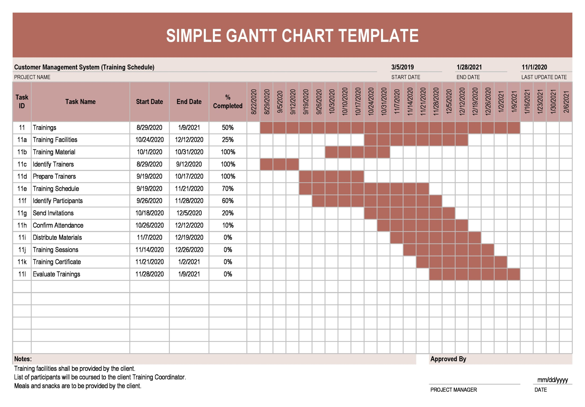

I learned how to add images to my website by creating an images folder and linking the image to my HTML file using the <img> element. I also learned how to embed a YouTube video using an iframe, making a web page more interactive and interesting. In addition, I learned the difference between raster and vector images and when each type is useful. These activities helped me understand how multimedia improves a website. After two weeks, I was able to learn the lesson by myself and finish this project independently. This experience gave me more confidence in my web design skills